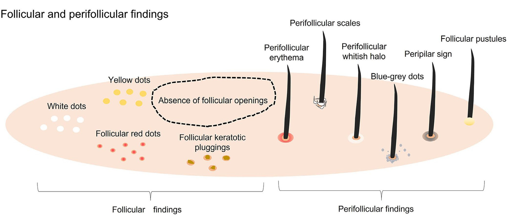
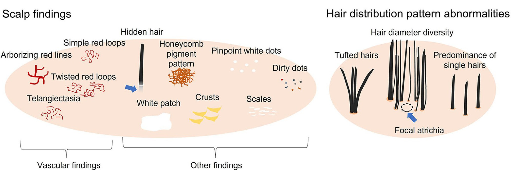

Hair Loss Classification
1. Hair shaft findings (모간 소견)

2. Follicular & Perifollicular findings (모낭 소견)

3. Scalp & Distribution findings (두피 및 분포 소견)

Diagnosis Results
① Rule-in (확진 보조): PPV 중심. 특정 증상 발견 시 해당 질환 확률 합산.
② Rule-out (배제 보조): 민감도 중심. 흔한 증상(민감도>50%) 부재 시 점수 차감.
③ 결과 산출: 최종 점수 = (PPV 합계) - (미발견 고민감도 페널티)
② Rule-out (배제 보조): 민감도 중심. 흔한 증상(민감도>50%) 부재 시 점수 차감.
③ 결과 산출: 최종 점수 = (PPV 합계) - (미발견 고민감도 페널티)